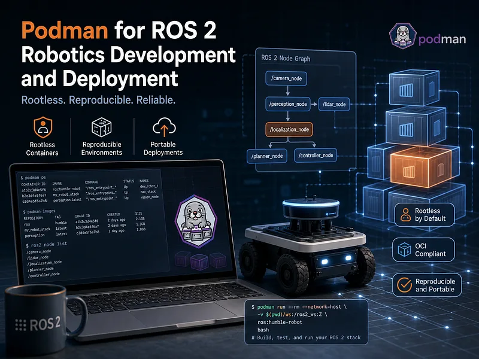
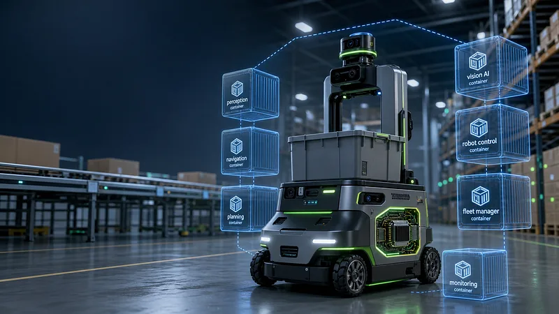
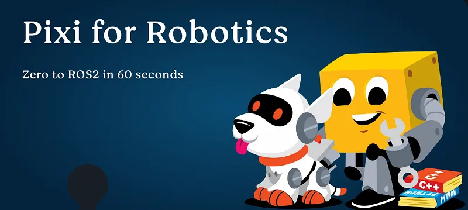

The Complete Guide to Podman for ROS 2 (2026 Edition): From Zero to Production-Ready Robotics
It usually starts with the same promise: this time the robotics environment will stay clean.
Read on MediumI help VC-backed robotics startups scale reliable robot fleets — from pilots to 1,000+ robots. My focus is the work between a robot demo and dependable production: repeatable releases, deployment automation, observability, and stable infrastructure.
I’m a robotics and AI engineer with 10+ years of experience across planetary rovers, industrial automated guided vehicles (AGVs), and autonomous mobile robots (AMRs). At Fraunhofer IPA and ROS-Industrial, I built and integrated ROS 2 systems, automated CI/CD, and supported industry partners deploying robots in real factories.
At NODE Robotics, I led Robotics DevOps and Infrastructure, supporting deployments for 1,200–1,500+ robots and hardening the platform for real-world operations. As founder of Robotair, I built a robotics DevOps infrastructure layer for packaging, over-the-air (OTA) updates, and monitoring.
I bring a product mindset to deployment and operations: the solution needs to be technically robust, usable by the team, and commercially practical. I share what I learn through talks and technical articles.
Reliable releases. Observable fleets. Less firefighting.

For founders and engineering teams turning promising pilots into repeatable production deployments.
The goal is a release and operations process your team can repeat — not a fleet that depends on one engineer’s laptop.
Community talks and published engineering notes.
I shared robotics DevOps practices with the ROSCon India community, drawing on the challenges of taking ROS software into production.
“He is an expert with Ansible and other deployment tooling.”
Practical notes on ROS 2, containers, fleet management, and reliable robot software. Published on Medium.

It usually starts with the same promise: this time the robotics environment will stay clean.
Read on Medium
A robot works perfectly on a developer laptop, the demo looks clean, the nodes talk to each other, RViz opens, and confidence is high. Then the software gets pushed to another machine, a…
Read on Medium
Not dev kits on a lab bench. Actual robots that move and interact in messy environments, with customers expecting them to work 24/7. In that context, every “small” technical decision…
Read on Medium
But what exactly is l4t-base? And why does it matter so much for robotics software, perception stacks, and containerized autonomy?
Read on Medium
Let me be fair. Docker dev containers were a genuine step forward. Before them, onboarding a new engineer to a ROS 2 project meant pointing them to a 10-page wiki and hoping for the…
Read on Medium
Fleet management is not about making one robot work. It is about making many robots behave in a predictable, repeatable, and observable way. That sounds simple, but in practice it is…
Read on Medium
We were about to run a high-stakes demo for a multi-robot research project. Three autonomous robots were supposed to execute a perfectly coordinated logistics sequence. During the dry…
Read on MediumTry another topic or search term.
Robots that explore, work together, and find their way home.
 Phoenix IIUnited Kingdom Rover Challenge, 2016
Phoenix IIUnited Kingdom Rover Challenge, 2016

A ROS routine that brings a patrol robot back to its charging station.

Multi-camera infrared localization for robots in a shared workspace.

A master–slave teaching pendant for industrial robotic arms.

Coordinating aerial and ground robots in a multi-robot system.
A decade of robotics software, system integration, and production operations.
Founder · Robotics DevOps infrastructure
Built an infrastructure layer for robot application packaging, OTA updates, and monitoring, bringing cloud-grade deployment practices to robotics teams.
Led Robotics DevOps and Infrastructure
Scaled deployments for 1,200–1,500+ robots and strengthened the infrastructure and delivery processes behind real-world fleet operations.
Founder
Robotics Research Associate · Research Assistant
ROS 2 system development and integration, automated CI/CD pipelines, and industry-partner deployments in factories, including work with ROS-Industrial.
Internship
Summer Internship
Research Assistant
Mechatronics and Intelligent Systems
Research Lab
Team Lead, Phoenix I & II · 2016
System Integration ·
2015
“He is a quick learner and is amazingly committed to his work.”
“His ability to lead and coordinate is incredible.”
“Ragesh showed great leadership quality throughout the project by taking up challenges.”
“He is a creative thinker and is updated with latest technologies.”
Excerpts from recommendations shared on my original portfolio.
Ragesh Ramachandran is a robotics and AI engineer specializing in DevOps, deployment, and fleet operations. He has 10+ years of experience across planetary rovers, industrial AGVs, and AMRs, with work at Fraunhofer IPA, ROS-Industrial, and NODE Robotics, and as founder of Robotair.
He helps teams build repeatable ROS and ROS 2 releases, CI/CD pipelines, software packaging, and OTA update mechanisms, then adds observability and incident-response practices. The focus is reliable fleet operations as deployments grow from pilots toward 1,000+ robots.
RobotOps is the operational work of releasing, deploying, monitoring, and maintaining robot software in the field. For Physical AI systems, it connects the software and AI running on physical machines to repeatable updates, operational visibility, and recovery procedures.
Yes. His work covers on-premise, hybrid, and cloud-connected infrastructure for autonomous robots, including deployment pipelines, OTA updates, and observability. Contact him on LinkedIn to discuss your robot platform, fleet stage, and deployment constraints.
Tell me what you’re deploying, where the fleet runs, and what breaks between a release and a robot in the field. We can discuss the deployment and operations support your team needs.
Discuss your deployment challenges on LinkedIn